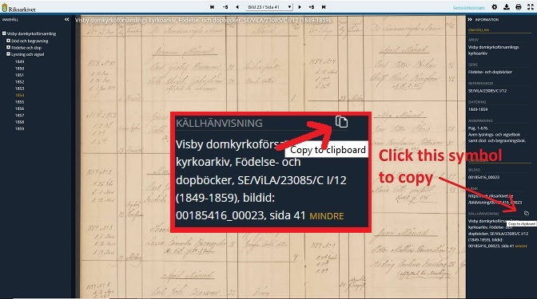

Riksarkivet, Arkiv Digial, Sveriges Dödbok & Soldatregister reference tool
Copy
Usage
Look up profile in Riksarkivet / Arkiv Digital web app / Sveriges Dödbok.
Copy reference
For Riksarkivet, copy reference under "Källhänvisning". (See image below textarea.)
For Arkiv Digital, copy reference using option "Kopiera -> Kopiera HTML-länk".
För Sveriges Dödbok, copy profile data using copy button.
Paste that reference to the top text area.
Press Copy-button.
Paste the marked text into Biography section of a wikitree profile where you want an
inline reference
.

WikiTree
~
About
~
Blog
~
Help
~
G2G Q&A Forum
~
Search
Login
|
Register
©
Hans Juneby.